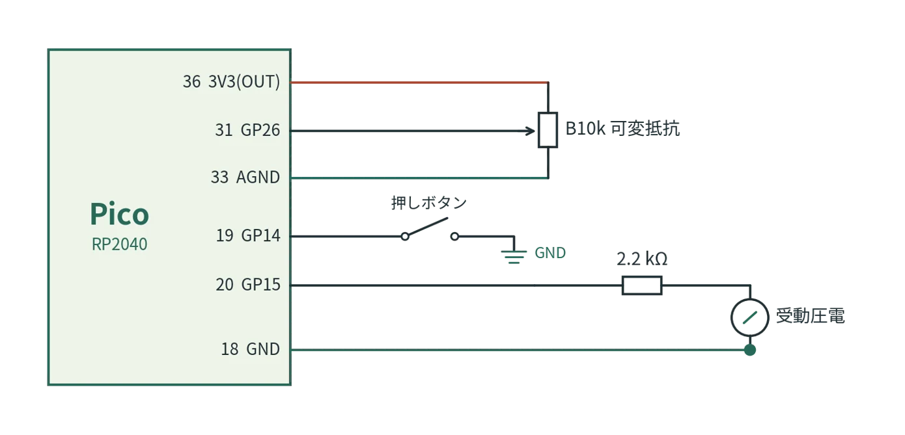

第39章 Picoでデジタル電子楽器を作る
製作2 押しボタン付き8音のつまみ鍵盤
Raspberry Pi Pico初代（RP2040版）の ADC でつまみの電圧を読み、8段階に量子化して、ボタンを押している間だけ発音する。Pico本体（ヘッダー実装済みが便利）、データ通信対応USBケーブル、ブレッドボード、B10k線形可変抵抗、モーメンタリー押しボタン、2.2 kΩ抵抗、受動圧電サウンダが必要。電源はPicoのUSBのみ。端子番号は初代Picoの基板の物理ピン番号であり、コードには GP 番号を書く。 Picoピン配置 S22 · Raspberry Pi S23 · MicroPython S24
| 機能 | 基板上の端子 | 接続 |
|---|---|---|
| つまみの高い側 | 36番 3V3(OUT) | 可変抵抗の一方の外端子 |
| つまみの低い側 | 33番 AGND | 可変抵抗のもう一方の外端子 |
| つまみの読み取り | 31番 GP26 / ADC0 | 可変抵抗の中央の摺動端子 |
| ボタン | 19番 GP14、18番 GND | ボタンを閉じると GP14 と GND がつながる。内蔵プルアップを使用 |
| 発音 | 20番 GP15、18番 GND | GP15 → 2.2 kΩ → 受動圧電サウンダ → GND |

導入。 Pico用の公式MicroPython UF2を入手し、BOOTSELを押しながらUSB接続して表示されるドライブへUF2をコピーする。次にエディターのMicroPython（Raspberry Pi Pico）接続を選び、付録Bのコードをまず実行する。電源投入時に自動演奏待ちにしたければ、Pico側に main.py として保存する。USBを外してから配線し、その後に通電。つまみを中央にして押しボタンを押し、音が出たらつまみを端から端まで回す。3V3(OUT) と USB由来の5 V系端子は別である。つまみの給電先を36番にすると GP26 にかかる電圧がPicoのADCの範囲内になる。 公式手順 S23
量子化、しきい値、PWM
ADCの読みを として とすれば、その場で0〜7へ分けられる。しかし境界付近の測定値が数カウント動くだけで隣接音が行き来する。前の区間を保持し、上の境界を320カウント超えた場合、または下の境界を320カウント下回った場合にだけ切り替える。このヒステリシスは、上昇時と下降時の閾値を離すことで雑音による往復を抑える。全範囲を一気に回しても区間を追えるようにループ内で複数段の移動を許す。
プログラムは MIDIノート 60, 62, 64, 65, 67, 69, 71, 72（C4〜C5）を選び、第12章の式を1 Hz単位に丸めた値で PWM 周波数を設定する。実際のPWM周波数はハードウェアの分周にも依存する。押したときデューティ比約50%、離したとき0%。本機の PWM は音程そのものの周波数でピエゾを駆動する。超音波域の PWM を低域通過で平均化してアナログ音声を取り出す設計は別の応用である。GP15は低インピーダンス負荷用の電力出力ではない。直列抵抗と受動圧電素子の指定を守る。 MicroPython S24
ソフトウェアとハードウェアで同じ旋律を鳴らす
初期旋律 C4–D4–E4–G4 を、付属実験室の鍵盤とPicoの両方で鳴らす。低域から高域へ続けて回し、Picoでは8つの段があり、TLC555では連続的に変わることを聴き比べる。同じ音名でも音色が異なる理由として、PWM の矩形波に由来する部分音、圧電素子の周波数応答、スピーカーの違いを挙げられる。測定時はマイクを近づけすぎて入力を歪ませない。
診断。 ①押しても無音なら、USB電源、受動圧電サウンダ、20番、ボタンが押したとき同じ電気接点につながる向きかを調べる。②一定音だけなら GP26 と抵抗中央の接続を調べ、REPLで ADC値が回転に応じて変化するか確認する。③反対方向へ高くなるなら、USBを外してから可変抵抗の外側2端子を入れ替える。④近接でしか聞こえない場合は、耳に押しつけずにサウンダの共振域または音響効率を点検する。
改造課題。 付録Bの NOTES の半音配列を に変えると C Dorian になる。二つの配列で同じつまみの操作を録音し、第3音と第7音の変化を聴く。つまみ操作を同じにして比較することで、旋法以外の変数を減らす。